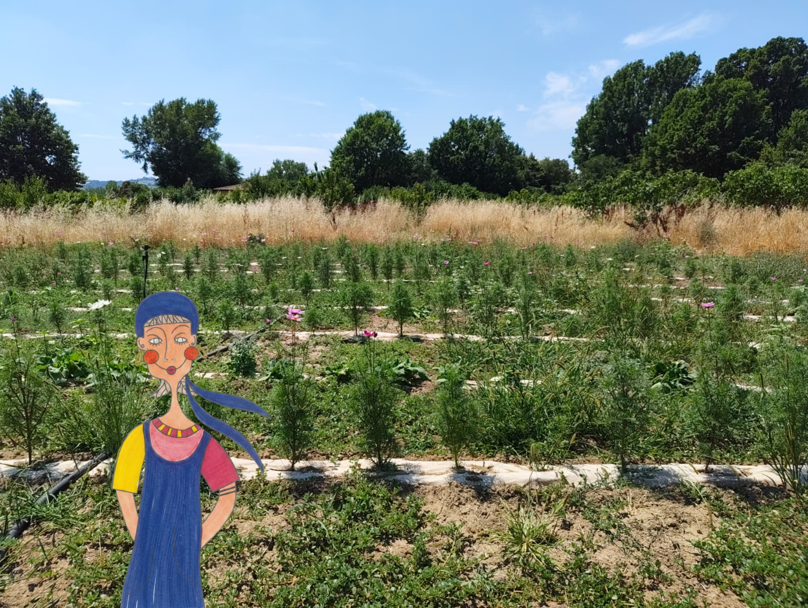

🌺
3 giugno 2025
Come far durare i fiori recisi più a lungo
Piccoli trucchi che uso ogni giorno per tenere i bouquet freschi per una settimana intera.
Leggi tutto →
«Fiori che profumano di campo»
Fiori coltivati con cura, stagione dopo stagione, per portare un po' di campo nella tua vita.
Scopri i fiori«Fiori che profumano di campo»
Fiori coltivati con cura, stagione dopo stagione, per portare un po' di campo nella tua vita.
Scopri i fioriDietro ogni mazzo c'è una storia che cresce dalla terra.
Mi chiamo Clelia e coltivo fiori da quando ero piccola, quando aiutavo mia nonna a seminare margherite lungo il bordo dell'orto. Oggi ho il mio campo — un appezzamento di terra che si trasforma con le stagioni, sempre pieno di colori e di profumi.
Lavoro a mano, senza fretta. Ogni fiore viene raccolto al momento giusto, quando è ancora fresco di rugiada.
La mia storia →Dal campo direttamente a te: fiori, miele e qualcosa di speciale.
Vieni a imparare l'arte dei fiori direttamente nel mio campo.
Un pomeriggio tra le aiuole a raccogliere e comporre il tuo mazzo perfetto. Adatto a tutti, nessuna esperienza richiesta.
Posti rimasti: 6 Scopri e iscriviti →Impara a intrecciare una corona estiva da portare o appendere in casa. Materiali inclusi nel prezzo.
Posti rimasti: 4 Scopri e iscriviti →Note di stagione, consigli e storie dal mio orticello fiorito.
Piccoli trucchi che uso ogni giorno per tenere i bouquet freschi per una settimana intera.
Leggi tutto →La mia lista dei semenzali preferiti e quando piantarli per un campo sempre in fiore da giugno a ottobre.
Leggi tutto →Dalle sei del mattino al tramonto: vi racconto la mia routine quotidiana tra annaffiature, raccolte e ordini.
Leggi tutto →Per ordini, informazioni o solo per un saluto dal campo.